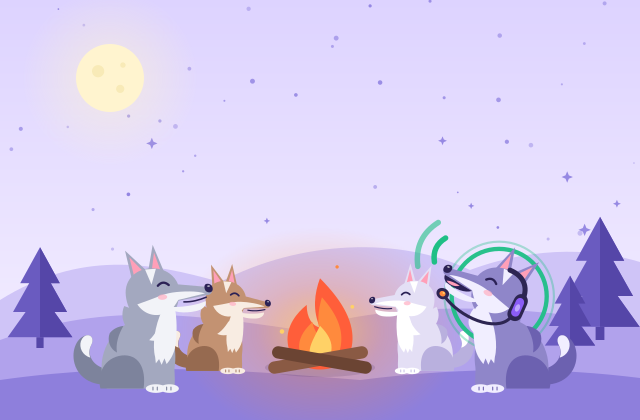
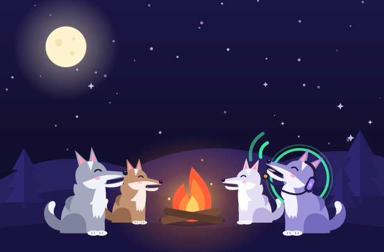

Guide
Voice and video calls
Your browser already knows how to carry a call. This guide shows how to start one with friends, get the microphone working, share a screen and make it sound good.


Your browser already has a call engine
For years, a voice call meant installing something: a desktop client, a plugin, an app from a store. That changed when browsers gained WebRTC, a web standard for real time audio, video and data. Today every modern browser on desktop and on phones can ask for your microphone, compress your voice, and send it straight to another browser, all inside a normal web page.
howlden is built on exactly that. When you join a voice channel, the page asks the browser for your microphone, and the browser sends your audio over connections it encrypts end to end with DTLS and SRTP. That encryption is part of WebRTC itself, so it is on for every call and cannot be turned off. Nothing passes through a howlden server, because there is no howlden server: the site is static files, and the call goes from your device to your friends' devices.
The upshot is simple. If you can open a web page, you can join a call. If you like the idea of an icon on your home screen, howlden is also a PWA you can install from the browser menu, but that is optional, and calls work the same either way.
Your first call, step by step
- Open the app, choose a display name and an avatar. No account or email is involved; both are kept in your browser.
- Create a den. It comes with text and voice channels and a member list, the familiar layout of server based chat apps.
- Click Invite and read the six words to a friend, or send them through any messenger.
- Your friend types the words in the app and reads six confirmation words back. You type them, and they are in the den.
- Both of you click a voice channel. Allow the microphone when the browser asks. Say hello and watch the ring light up around your avatar.
Repeat the invite for each new friend, up to 5 people per den. howlden connects every newcomer to the rest of the den on its own.
When the microphone does not work
Almost every "they cannot hear me" problem comes down to permissions or the wrong device. Work through these in order:
- The browser prompt. The first time you join a voice channel, the browser asks whether the site may use your microphone. If you clicked Block, or dismissed it, the browser remembers. Click the icon to the left of the address bar, open the site permissions, set Microphone to Allow, and reload.
- The operating system. Windows, macOS, Android and iOS all have their own microphone privacy switches. If the browser itself is not allowed to use the microphone, the site permission alone is not enough. Look in your system privacy settings for the microphone list and make sure your browser is switched on.
- The wrong input. Laptops with a headset plugged in, or a webcam with its own microphone, can have two or three inputs. Check which one your system or browser is using.
- Another app holds the mic. Some programs grab the microphone exclusively. Close other call apps and try again.
- A secure page. Browsers only offer the microphone to pages loaded over HTTPS. The official howlden address uses HTTPS, so open it from there rather than from a saved file.
A quick self test: speak and watch your avatar. If the speaking ring lights up, your microphone is reaching howlden, and any remaining problem is on the network side.
Cameras and screen share
Video and screen share live inside voice channels. Once you are in one, the camera button turns your camera on, and the screen button lets you pick a window, a browser tab or the whole screen. The browser always asks first and shows its own indicator while you share, so nothing starts behind your back.
Every stream goes straight to each friend in the den, sealed with SRTP like your voice. That is private, but it also means your device sends a copy of your video to every other member. In a full den, video asks a lot of a home upload; if the call starts to stutter, switch cameras off first and keep the screen share.
Making the call sound good
Browser audio can sound as clean as any installed app if you help it a little:
- Use headphones or earphones. Speakers let your friends' voices leak back into your microphone, which they hear as echo. Even cheap earphones fix most of it.
- Mute when you are not talking. The mute button stops your microphone from sending anything. Useful for keyboards, dogs and dishwashers.
- Deafen when you step away. Deafen silences everyone for you and mutes you too, a polite way to say "back in five".
- Leave the camera off unless you need it. Audio is light on bandwidth. Video, especially with several people, uses a lot of upload, and on a weak connection it is the first thing to cause stutter.
Push to talk, music mode and recording
- Push to talk. Turn it on from the call's More menu and your microphone is open only while you hold the talk button or your shortcut key. On a phone you get a big Hold to talk button, handy on a noisy bus.
- Music mode. Noise suppression and echo cancellation are great for voices and bad for a guitar. Music mode turns those filters off, uses stereo where the device has it, and raises the quality to up to 128 kbps. Use headphones, or the echo comes back.
- Local recording. You can record what your device hears in a call. The file is saved only on your device, after you confirm, and everyone in the call sees a Recording notice and hears a short sound. Ask before you record; in many places it is required. The notice comes from howlden itself, so it cannot stop someone who records with another program.
Calls from a phone browser
howlden runs on phones the same way it runs on laptops. A few habits help. Keep howlden in the foreground during a call, since phone browsers may pause pages that sit in the background. Plug in earphones, because a phone speaker sits right next to its microphone. And if you call often, use the browser's install or "Add to Home screen" option so howlden opens like an app. Once installed and loaded, the app shell opens even offline, though of course a call still needs a network.
Mobile data is fine for voice. If one person is on a carrier network with a strict NAT and the other is behind a strict NAT too, the direct connection may fail. howlden spots this and explains it in plain words; the guide on when a connection fails covers what to do, including adding your own TURN relay in settings.
What a browser call cannot do
Being honest about the edges saves you a frustrating evening:
| Situation | What happens |
|---|---|
| More than 5 people | A den caps at 5, because each member sends audio to every other member directly. |
| A friend joins late | They hear the call from the moment they connect. Nothing is stored on a server for them. |
| Both sides behind strict NAT | A direct connection can fail, and you need a TURN relay that forwards the encrypted packets. |
| Everyone turns on video | Upload bandwidth climbs fast. Audio alone stays light. |
If you want to know how the connection itself is set up, read how howlden works.
Start a call
Grab a pair of earphones, open a den, share six words, and join the voice channel together. If the ring lights up when you speak, you are done: no installer, no account, just a browser tab and your friends around the campfire.
Frequently asked questions
Do I need to install anything?
No. Modern browsers on desktop and phone include WebRTC, which can capture your microphone and send audio directly to other people. You just open a den and join a voice channel.
Why can't my friends hear me?
Usually the browser blocked microphone access, the operating system blocks the browser, or the wrong input device is selected. Check the site permissions next to the address bar first, then your system privacy settings.
Does it work on a phone?
Yes. Keep the page in front during a call, use earphones to avoid echo, and allow the microphone when asked. Sharing a screen from a phone browser is limited by the phone.
How much data does a call use?
Audio is light. Video with several people takes much more upload bandwidth, so turn the camera off if your connection struggles.